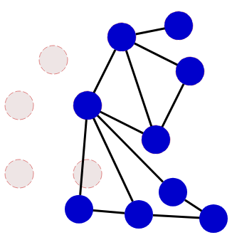
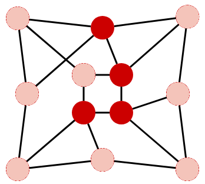
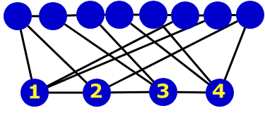
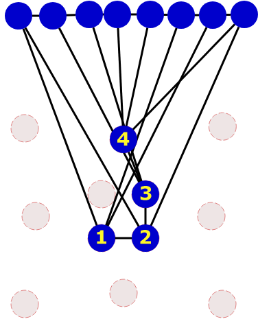
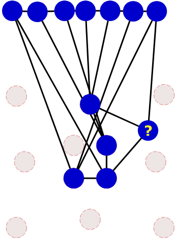
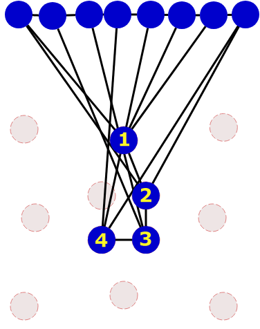
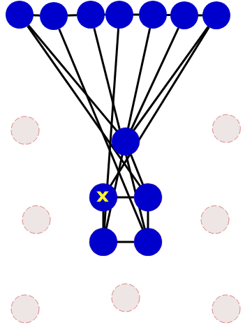
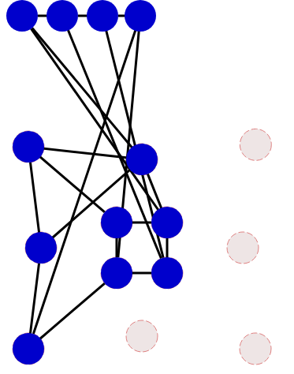
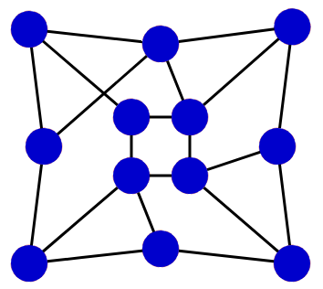

Move the blue circles on the left to be exactly like the objective figure on the right.
| Objective | |
We can then complete the figure by placing the remaining circles.
We can then progress by placing the three circle neighbors.
And from there, we can place the last four circles and thus complete the figure.
We can start by counting the number of lines that start from each circle, in the red figure. There are 4 circles that have 4 neighbors, and all the others have 3 neighbors. Those who have 4 neighbors form a chain, that is, they are interconnected one after the other.
To see more clearly, we can sort the blue circles, making a group at the top with the circles having 3 neighbors, and a group at the bottom with the circles having 4 neighbors. We try as much as possible to find an order for the circles which allows to "unravel" the nodes.
To place the 4 circles with 4 neighbors, there are only two possibilties: either we start by placing up the circle of blue left, or that of right. Let's first try to put the one on the right, for example.
But here we have a problem. When we try to place a circle with 3 neighbors, for example the one that was at the top right, we get stuck because this blue circle does not correspond to any red circle.
So we were wrong. Let's go back, and place the 4 circles with 4 neighbors in the other direction. We can then find a place for the circle having 3 neighbors.
 We can now place the other circles and complete the figure.
 This challenge illustrates the problem of matching a graph , that is, a set of circles, some of which are connected by lines, with another graph with the same structure.
This problem, known as graph isomorphism , is particularly difficult: there is no algorithm that can effectively solve this problem for any graph.
Nevertheless, for particular graphs, such as those considered here, there are many tips for mapping one graph to another without spending hours. It is possible to program such tricks, as for example the one described here, which consists in studying the number of neighbors of each circle.